Home
Fábrica
Produtos e Serviços
Tecnologia
Contato
Home
Fábrica
Produtos e Serviços
Tecnologia
Contato
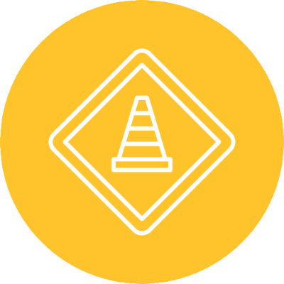
OBRAS
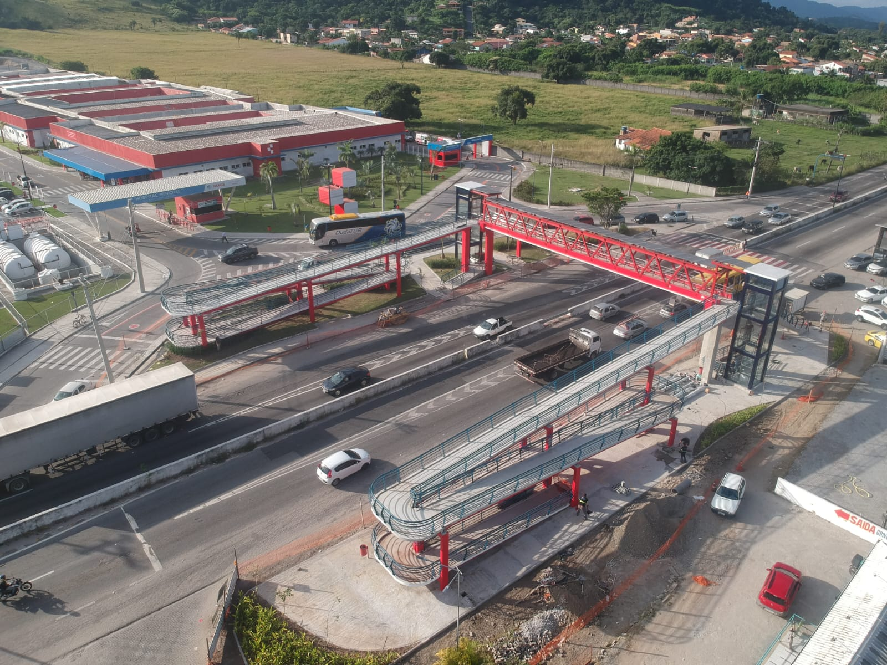
Local: São josé do imbassaí - Maricá-RJ
Ano: 2023
Comprimento: 50M
Largura: XXX
Cliente: SOMAR - Autarquia de Serviços de Obras de Maricá
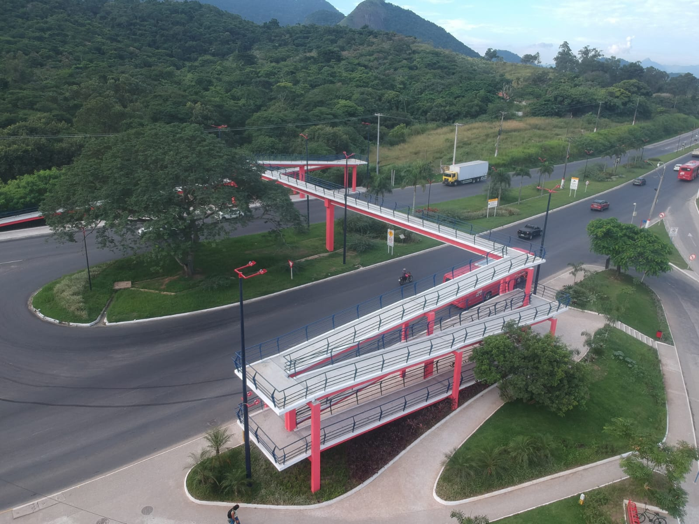
Local: Manu Manuela - Maricá-RJ
Ano: 2023
Comprimento: 50M
Largura: XXX
Cliente: SOMAR - Autarquia de Serviços de Obras de Maricá
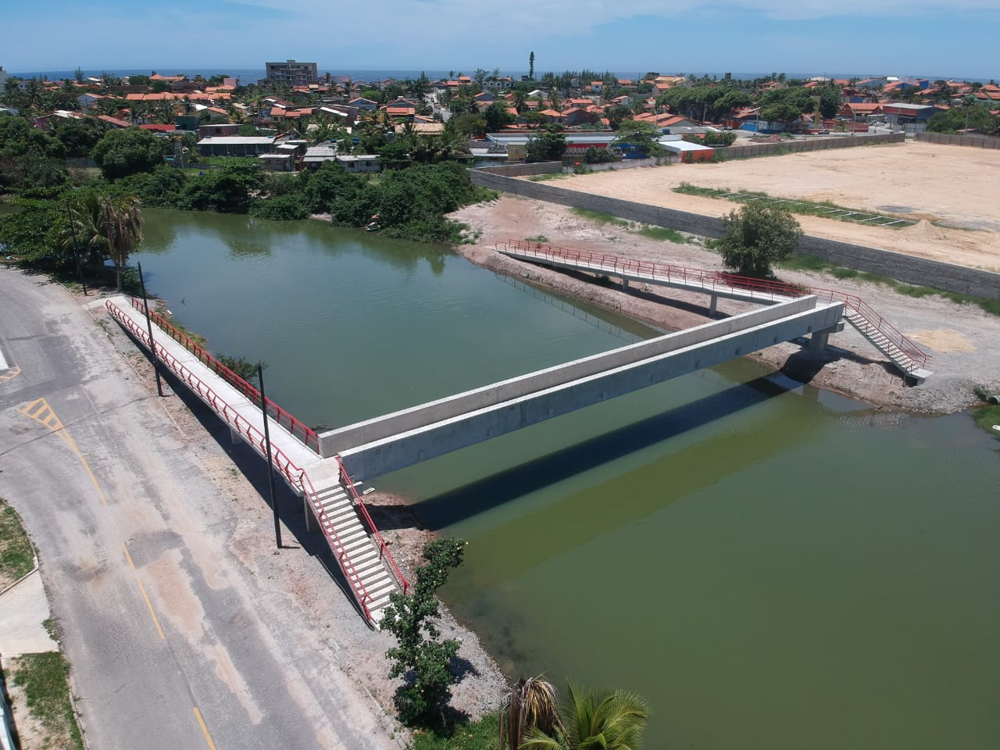
Local: Bairros de Cordeirinho e Balneário - Maricá-RJ
Ano: 2020
Comprimento: XXX
Largura: 40M
Cliente: SOMAR - Autarquia de Serviços de Obras de Maricá
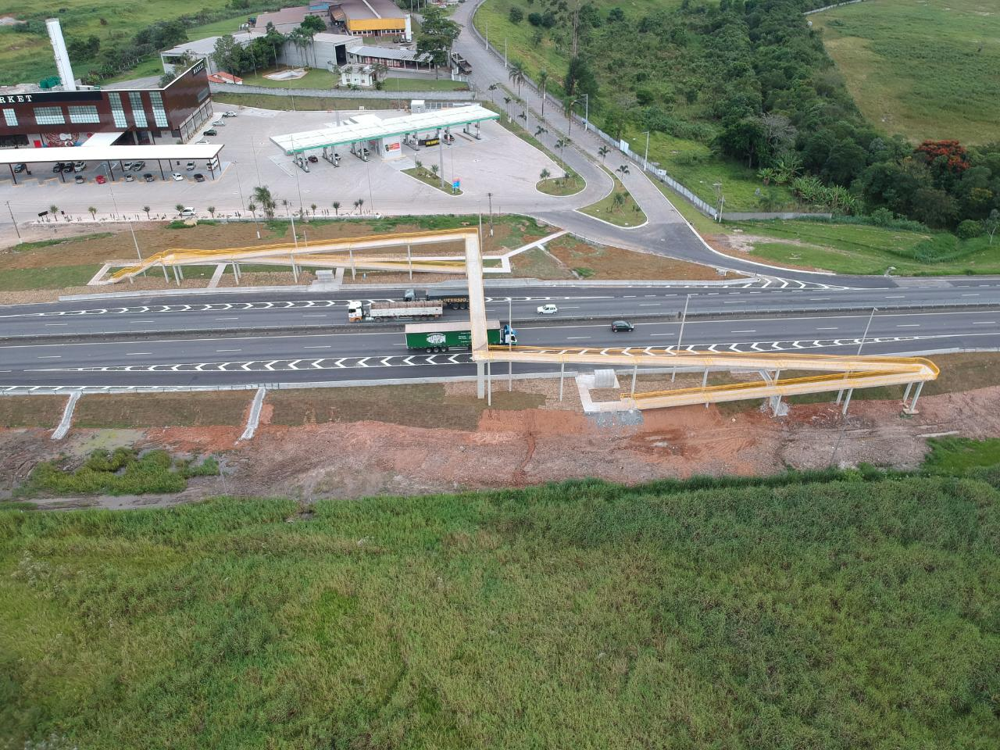
Local: Guararema-Sp
Ano: 2018
Comprimento: 275.64M
Largura: 2.04M
Cliente: ANTT - Agência Nacional de Transporte Terrestre
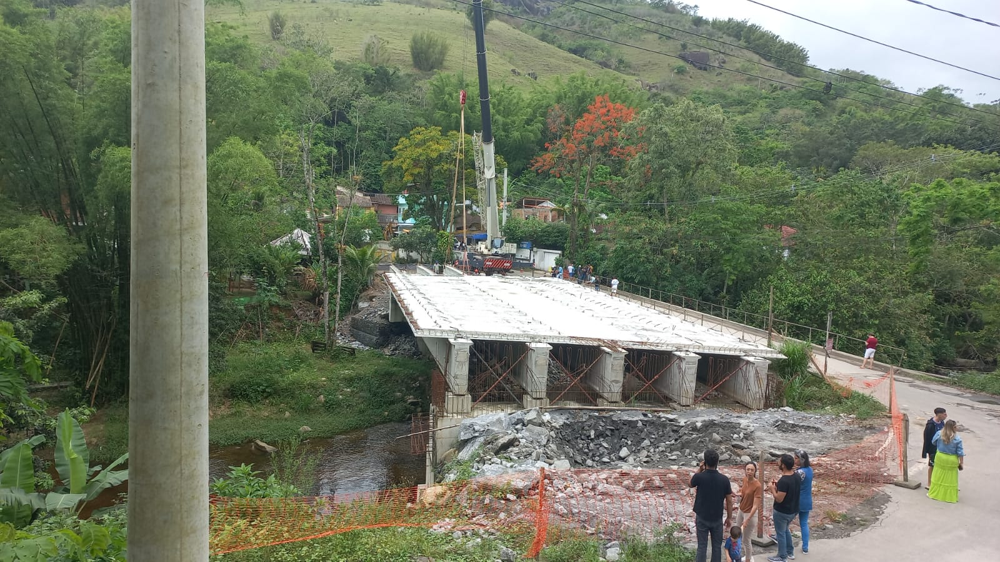
Local: Estrada Paraty - Cunha-RJ
Ano: 2021
Comprimento: 59M
Largura: 13M
Cliente: Consórcio Serra da Bocaina II (Geomecanica)
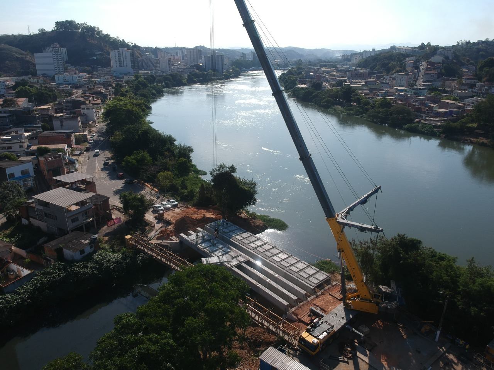
Local: Barra Mansa-RJ
Ano: 2021
Comprimento: XXX
Largura: XXX
Cliente: Secretaria do Estado de Infraestrutura e Obra-RJ
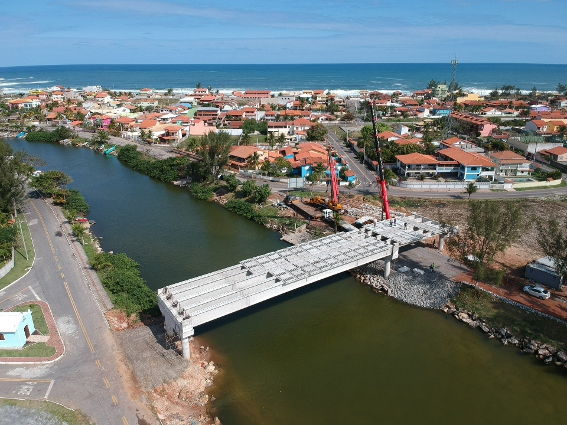
Local: Maricá-RJ
Ano: 2018
Comprimento: 75.40M
Largura: 11M
Cliente: Prefeitura de Maricá-RJ
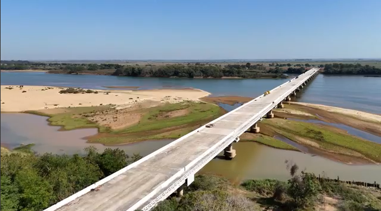
Local: São joão da Barra-RJ
Ano: 2014
Comprimento: 1.344.30M
Largura: 16.20M
Cliente: Governo do Estado do Rio de Janeiro
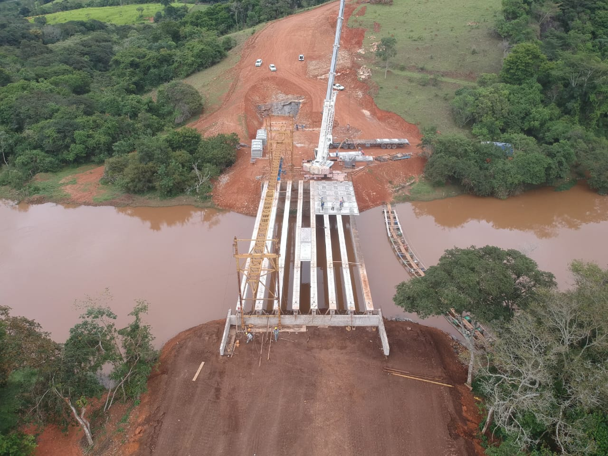
Local: Varinha-MG
Ano: 2021
Comprimento: 40M
Largura: 18M
Cliente: Construtora Dharma S.A
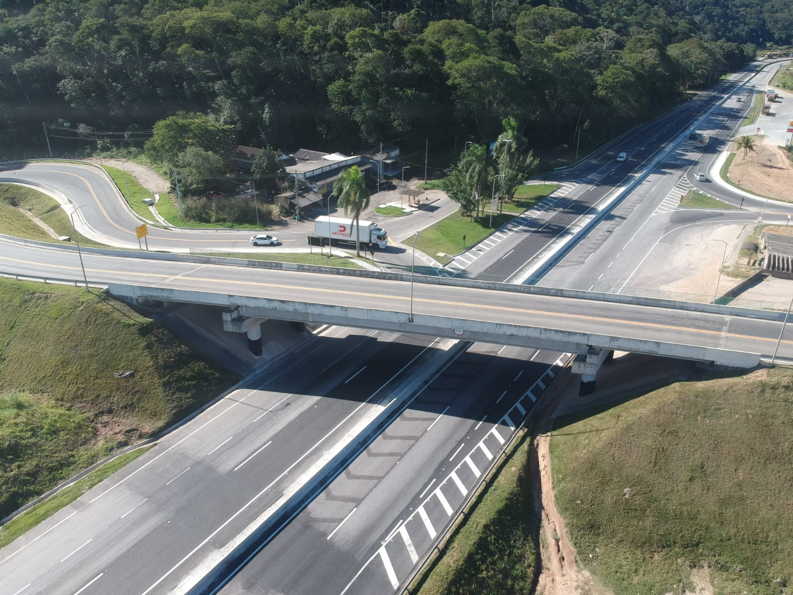
Local: Duque de Caxias-RJ
Ano: 2017
Comprimento: 320.70M
Largura: 10.50M
Cliente: Prefeitura de Duque de Caxias